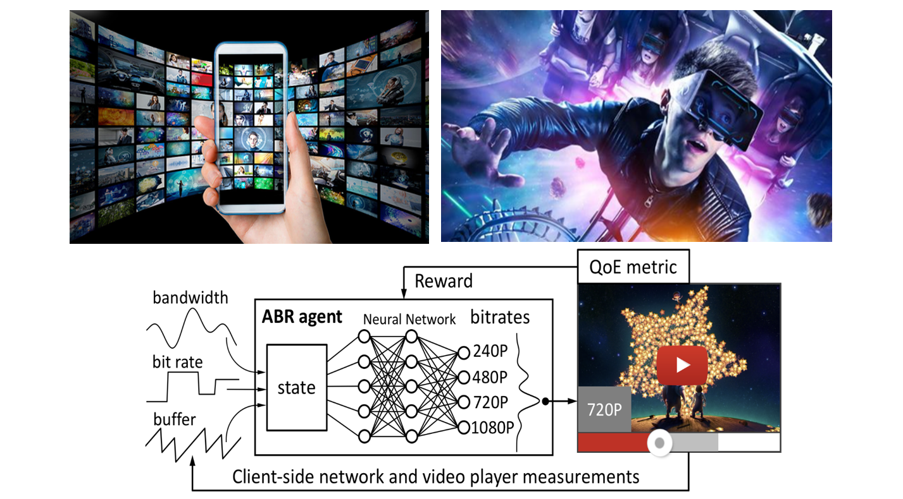

|
张广辉教授，博士生导师，山东省"泰山学者" 中国，青岛 Email: gh.zhang [AT] sdu.edu.cn, |
招生意向:
我们全年招收【博士后】、【博士研究生】、【硕士研究生】及【本科科研助理】。欢迎对科研充满热情、具备扎实编程能力的同学加入我们的团队。对于科研表现优秀的同学，我们将提供多种形式的国内及海外学术交流与访问机会。 有意申请者请将个人简历通过电子邮件发送至邮箱，邮件标题请注明“应聘岗位+姓名”。[详情]
个人简介
张广辉博士，山东省泰山学者（青年专家）、山东省（海外）优秀青年科学基金获得者、山东省高层次人才、山东大学齐鲁青年学者。于2020年在香港中文大学信息工程系取得博士学位，于2020年至2021年期间在香港中文大学任博士后研究员，于2021年至2022年间在香港浸会大学计算机科学系任教。在之前，于2016年在北京大学取得硕士学位。 其研究工作致力于将最先进的机器学习技术应用于视频流媒体传输系统，显著优化和改善最为核心的用户观看体验质量。
研究方向
【多媒体传输系统】【计算机网络】【机器学习】
|  |
代表性论文（*通信作者）
Guanghui Zhang, Ziming Wang, Huaren Wei, Mengbai Xiao, Hui Yuan, Dongxiao Yu, and Xiuzhen Cheng, "A Novel Spatial-Temporal Learning Method for Enhancing Generalization in Adaptive Video Streaming", IEEE Transactions on Mobile Computing (IEEE TMC), July. 2025. [CCF A, JCR Q1]
Guanghui Zhang, Ke Liu, Mengbai Xiao, Bingshu Wang, Dongxiao Yu, and Xiuzhen Cheng, "SLVS: A Self-learning Approach to Achieve Near-Second Low-Latency Video Streaming under Highly Variable Networks", IEEE Transactions on Mobile Computing (IEEE TMC), Jan. 2025. [CCF A, JCR Q1]
Guanghui Zhang, Jing Guo, Mengbai Xiao, Dongxiao Yu, Vaneet Aggarwal, and Xiuzhen Cheng, "A Long-Term-Planning Learning Strategy to Coordinate Viewport Prediction and Video Transmission in 360° Video Streaming", IEEE Transactions on Mobile Computing (IEEE TMC), Oct. 2024. [CCF A, JCR Q1]
Guanghui Zhang, Jing Guo, Mengbai Xiao, Dongxiao Yu, and Xiuzhen Cheng, "DeepReal: Short-form Video Streaming with Fine-grained Bitrate Adaptation", Proc. IEEE International Conference on Sensing, Communication, and Networking (IEEE SECON), Dec. 2024. [CCF B]
Shuquan Liu, Guanghui Zhang*, Mengbai Xiao, Dongxiao Yu, and Xiuzhen Cheng, "An Intelligent Prefetch Strategy with Multi-round Cell Enhancement in Volumetric Video Streaming", Proc. IEEE International Conference on Sensing, Communication, and Networking (IEEE SECON), Dec. 2024. [CCF B]
Ziming Wang, Guanghui Zhang*, Mengbai Xiao, Dongxiao Yu, and Xiuzhen Cheng, "BETA: A Novel Learning-based Adaptive Streaming Approach with Spatial and Temporal Optimization", Proc. IEEE International Conference on Sensing, Communication, and Networking (IEEE SECON), Dec. 2024. [CCF B]
Guanghui Zhang, and Jing Guo, "A Deep Reinforcement Learning Approach to Balance Viewport Prediction and Video Transmission in 360° Video Streaming," International Joint Conference on Artificial Intelligence (IJCAI'24), Aug 2024. [CCF A]
Guanghui Zhang, Ke Liu, Mengbai Xiao, Bingshu Wang, and Vaneet Aggarwal, "An Intelligent Learning Approach to Achieve Near-Second Low-Latency Live Video Streaming under Highly Fluctuating Networks," ACM International Conference on Multimedia (ACM MM'23), Oct 2023. [CCF A]
Pengqiang Bi, Mengbai Xiao, Dongxiao Yu, Guanghui Zhang, Jian Tong, Jingchao Liu, and Yijun Li, "oBBR: Optimize Retransmissions of BBR Flows on the Internet", USENIX Annual Technical Conference (USENIX ATC'23), July 2023. [CCF A]
Jie Zhang, Guanghui Zhang*, and Lirong Dai, "Frequency-Invariant Sensor Selection for MVDR Beamforming in Wireless Acoustic Sensor Networks", IEEE Transactions on Wireless Communications (IEEE TWC), July 2022. [CCF B, JCR Q1]
Guanghui Zhang, Jie Zhang, Haibo Hu, Yan Liu, Jack Y. B. Lee, and Vaneet Aggarwal, "Adaptive Video Streaming with Automatic Quality-of-Experience Optimization", IEEE Transactions on Mobile Computing (IEEE TMC), Mar. 2022. [CCF A, JCR Q1]
Guanghui Zhang, Jie Zhang, Ke Liu, Jing Guo, Haibo Hu, Jack Y. B. Lee, and Vaneet Aggarwal, "DUASVS: A Mobile Data Saving Strategy in Short-form Video Streaming", IEEE Transactions on Service Computing (IEEE TSC), Feb. 2022. [CCF A, JCR Q1]
Jie Zhang, and Guanghui Zhang*, "A Parametric Unconstrained Beamformer Based Binaural Noise Reduction for Wireless Hearing Aids", IEEE/ACM Transactions on Audio, Speech and Language Processing (IEEE/ACM TASLP), Dec. 2021. [CCF B, JCR Q1]
Guanghui Zhang, Ke Liu, Haibo Hu, and Jing Guo, "Short Video Streaming with Data Wastage Awareness", IEEE International Conference on Multimedia and Expo (IEEE ICME 2021), July 2021. [CCF B]
Guanghui Zhang, Jack Y. B. Lee, Ke Liu, Haibo Hu, and Vaneet Aggarwal, "A Unified Framework for Flexible Playback Latency Control in Live Video Streaming", IEEE Transactions on Parallel and Distributed Systems (IEEE TPDS), May 2021. [CCF A, JCR Q1]
Guanghui Zhang, Ke Liu, Haibo Hu, Vaneet Aggarwal, and Jack Y. B. Lee, "Post-Streaming Wastage Analysis – A Data Wastage Aware Framework in Mobile Video Streaming", IEEE Transactions on Mobile Computing (IEEE TMC), Mar. 2021. [CCF A, JCR Q1]
Guanghui Zhang, and Jack Y. B. Lee, "Ensemble Adaptive Streaming – A New Paradigm to Generate Streaming Algorithms via Specializations", IEEE Transactions on Mobile Computing (IEEE TMC), Apr. 2019. [CCF A, JCR Q1]
讲授课程
计算概论（本科），山东大学，2024年秋季
高等计算机网络（研究生），山东大学，2023~2025年春季
新兴网络技术与实践（本科），山东大学，2023~2025年春季
人工智能应用 (COMP3065)，香港浸会大学，2022年春季